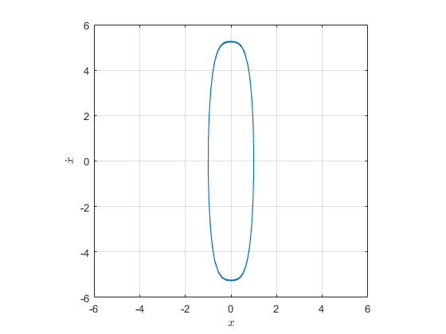
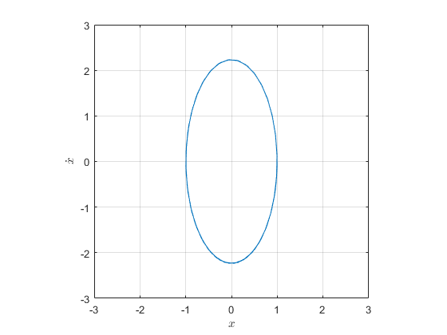
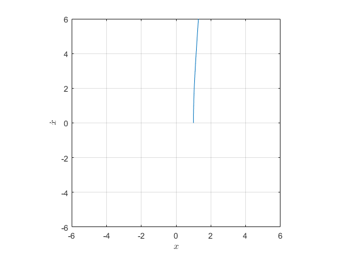
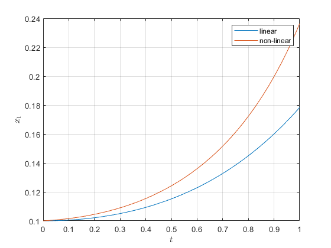
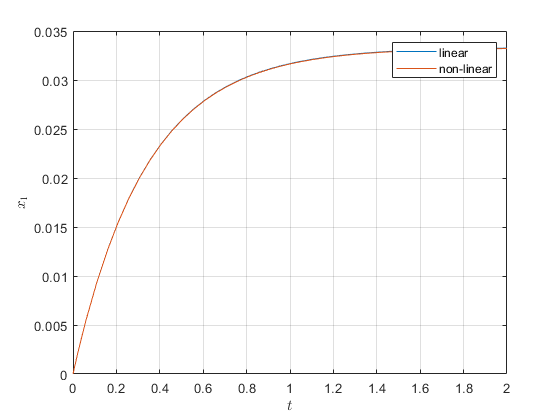

Linear System HW.1
Programer: PO-HSUN WU Last edit date: 2022/02/28 16:30
Contents
#1(a)
clear;clc;close all odefun = @(t, x) [0 1; -5-45*x(1)^2 0]*x; [~, x] = ode45(odefun, [0 10], [1 0]); figure() plot(x(:,1), x(:,2)) grid on daspect([1 1 1]); axis([-6 6 -6 6]) xlabel("$x$", "Interpreter", "latex"); ylabel("$\dot{x}$", "Interpreter", "latex")
#1(b)
clear;clc;close all A = [0 1; -5 0]; odefun = @(t, x) A*x; [~, x] = ode45(odefun, [0 10], [1 0]); figure() plot(x(:,1), x(:,2)) grid on daspect([1 1 1]); axis([-3 3 -3 3]) xlabel("$x$", "Interpreter", "latex"); ylabel("$\dot{x}$", "Interpreter", "latex")
#1()
clear;clc;close all odefun = @(t, x) [0 1; -5+45*x(1)^2 0]*x; [~, x] = ode45(odefun, [0 10], [1 0]); figure() plot(x(:,1), x(:,2)) grid on daspect([1 1 1]); axis([-6 6 -6 6]) xlabel("$x$", "Interpreter", "latex"); ylabel("$\dot{x}$", "Interpreter", "latex")
Warning: Failure at t=2.853162e-01. Unable to meet integration tolerances without reducing the step size below the smallest value allowed (8.881784e-16) at time t.
#2(a)
clear;clc;close all nonlinear = @(t, x) [x(1)^2+x(2)^2+x(2)*cos(x(1)); (1+x(1))*x(1)+(1+x(2))*x(2)+x(1)*sin(x(2))]; linear = @(t, x) [0 1 ; 1 1]*x; [t_linear, x_linear] = ode45(linear, [0 1], [0.1 0]); [t_nonlinear, x_nonlinear] = ode45(nonlinear, [0 1], [0.1 0]); figure() plot(t_linear, x_linear(:,1), t_nonlinear, x_nonlinear(:,1)) grid on legend("linear", "non-linear") xlabel("$t$", "Interpreter", "latex"); ylabel("$x_1$", "Interpreter", "latex")
#2(b)
clear;clc;close all nonlinear = @(t, x) [x(2); -(3+x(2)^2)*x(2)]; linear = @(t, x) [0 1 ; 0 -3]*x; [t_linear, x_linear] = ode45(linear, [0 2], [0 0.1]); [t_nonlinear, x_nonlinear] = ode45(nonlinear, [0 2], [0 0.1]); figure() plot(t_linear, x_linear(:,1), t_nonlinear, x_nonlinear(:,1)) grid on legend("linear", "non-linear") xlabel("$t$", "Interpreter", "latex"); ylabel("$x_1$", "Interpreter", "latex")
clear;clc;close all syms B J Kt K0 La Ra s A = [0 1 0; 0 -B/J Kt/J; 0 -K0/La -Ra/La]; B = [0; 0; 1/La]; C = [1 0 0]; answer = C*inv(s*eye(3)-A)*B; collect(answer)
ans = Kt/(J*La*s^3 + (B*La + J*Ra)*s^2 + (B*Ra + K0*Kt)*s)